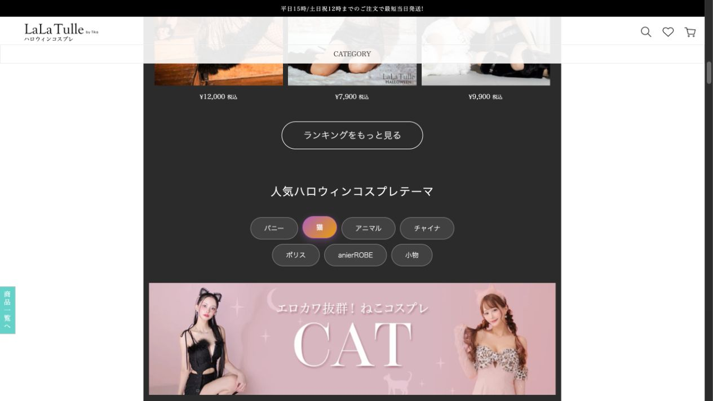

ハロウィン特集の
構成・商品一覧を変更
見出し・カテゴリ導線を整理し、商品一覧を3列×3段から3列×2段に変更。
改善前
カテゴリごとの商品が縦に続く構成
1次改善後
見出し・導線・グリッドを変更
各画面の中をスクロールして比較できます。既存ポートフォリオPDFの掲載画面を高解像度で抽出しています。
保存HTMLで改修前3x3_no-cate、改修後3x2_no-cateを確認。PDF掲載画面では動的な商品画像が省略されており、未確認画像は補っていません。
| 指標 | 変化率 |
|---|---|
| 表示回数 / Active user | +13.34% |
| イベント数 / Active user | +8.71% |
2025/9/14–16 と 8/1–31。分母はActive users、値は原資料の相対変化率（pp・購入転換率ではありません）。期間長・流入構成が異なるため方向性のみで、改修の因果効果は断定しません。

順位と改修段階の補足
2025年の主要キーワードは7〜9位→改修直後約15位→9/28–10/1平均2位→10月初旬7〜9位。短期順位だけで戻さず観察を継続しました。現在順位ではなく、季節性や他要因を含む観測です。
前後画像は初回改修。タブ画像はシーズン後の別段階で、同じ変更として比較していません。スクロール削減率は未計測です。